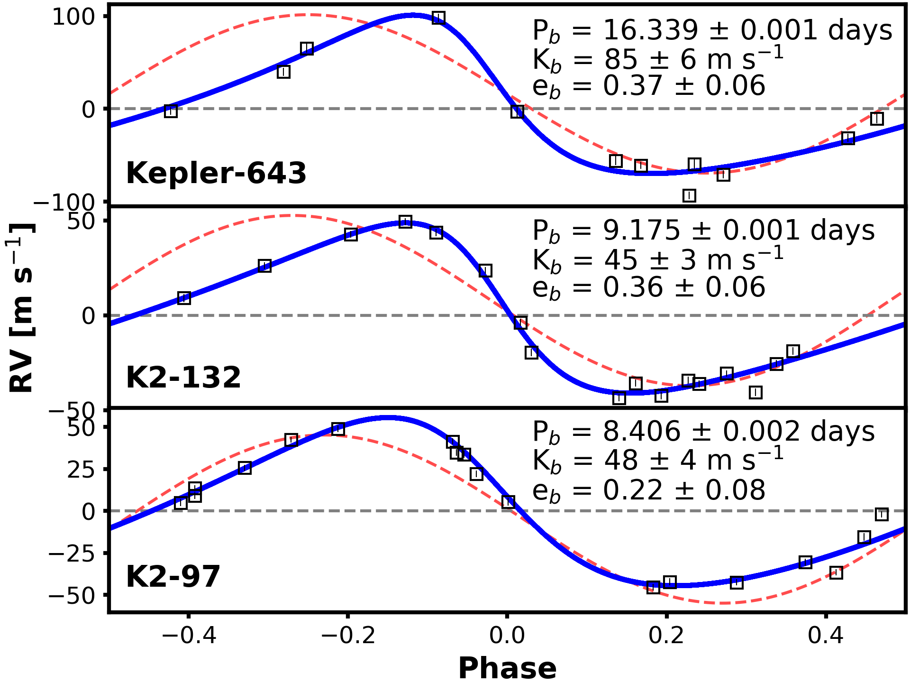
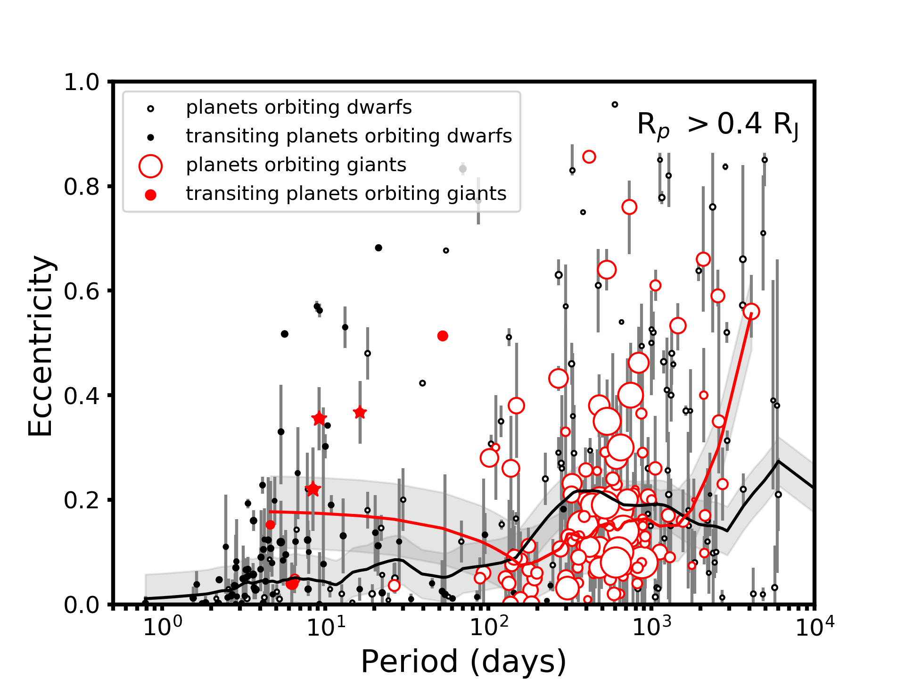
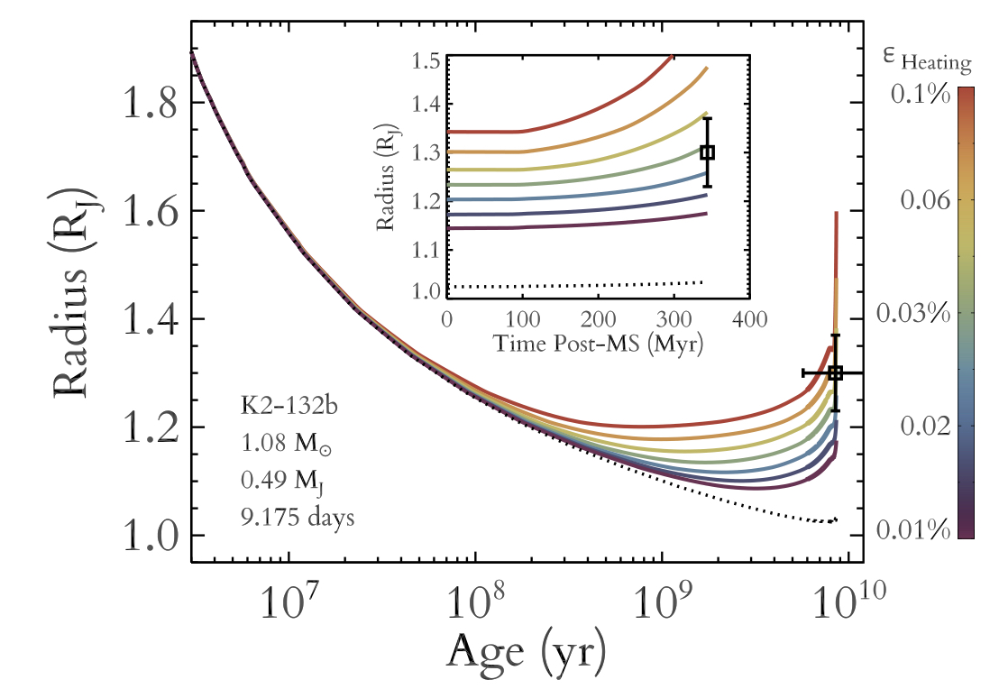
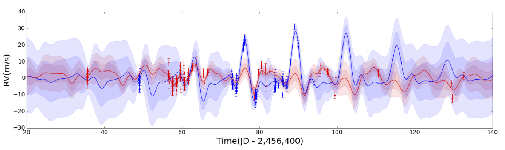
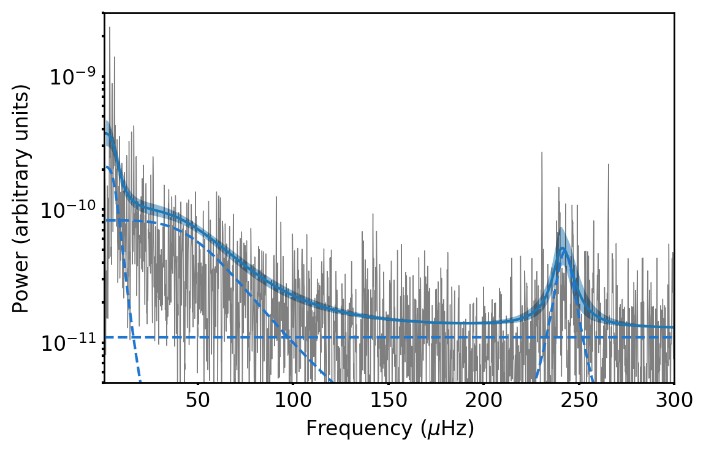
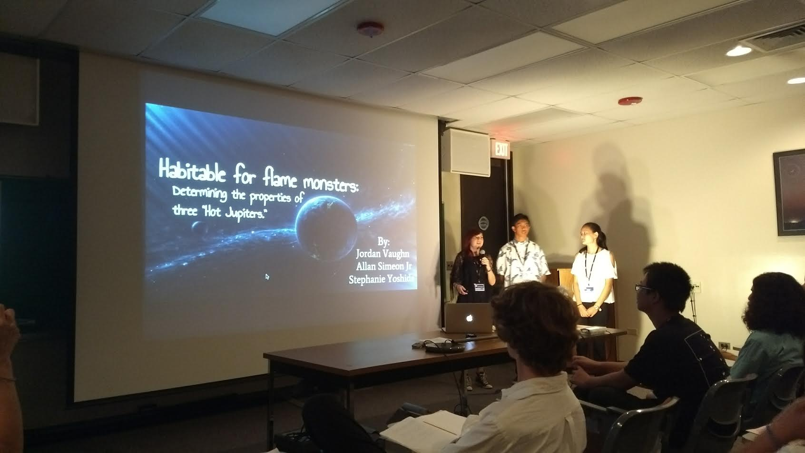
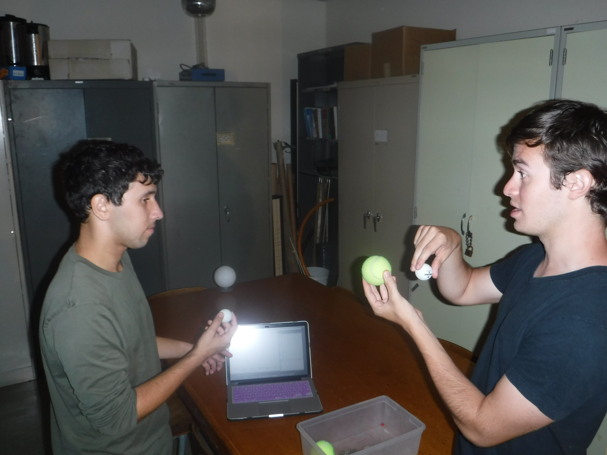

I'm interested in understanding the mysteries behind stellar
and planetary evolution, and how they affect our
past, present and future. In my free time, I enjoy making music,
attempting to surf, and spreading my enthusiasm about
astronomy to others.
In 2016, I began a search for giant planets orbiting giant stars
using data from the NASA K2 Mission. So far, our search has
identified two new planets, K2-97b and K2-132b, whose discoveries
we published
here and
here. Both of these planets
are gas giants, 1.3 times the size and half the mass of Jupiter,
orbiting their host stars approximately every 9 days. These targets were
identified and accurately and precisely characterized with asteroseismology, the study of
oscillations of stars. We find that among stars that are 3 to 8 times
the size of our Sun, it seems that planets larger than the size of
Jupiter at orbital periods of 10 days or less are significantly more
common than such planets are around main sequence, Sunlike
stars. With the launch of TESS in early 2018, we will soon be
sensitive to these types of systems all over the sky, revolutionizing
our understanding of planetary evolution and tidal dynamics. These two
poorly understood processes are crucial to life everywhere. Check
back in a few months for more updates!
Eccentric Giants
Orbiting Giants
Studies have predicted
that as main sequence stars evolve into red
giants, any long-period, massive planets on
eccentric orbits should be pulled closer and
into more circular orbits. This should create
a population of short-period, moderately
eccentric giant planets orbiting giant
stars. In 2018, analysis of radial velocity
measurements from the Keck-I telescope
revealed that both planets discovered by our
survey of giant planets orbiting giant stars
were on moderately eccentric orbits,
suggesting that they may have migrated to
their current locations from longer period,
more eccentric orbits. A similar Kepler
planetary system revealed a slightly more
eccentric, longer-period planet orbiting a
less evolved star, indicative of an
evolutionary sequence.
 Comparing the
populations of all known planets with measured
eccentricities reveals that close-in giant
planets seem to be significantly more
eccentric around giant stars than dwarf
stars. Additional information about this
study can be found by reading the paper
here or by watching the Aloha
Brief below.
Planet Re-Inflation
A large fraction of gas giant
planets with temperatures above 1000 K are much
larger than 1.2 times the size of Jupiter, the maximum size models
predict for a self-gravitating sphere of hydrogen and helium. Though these
inflated giant planets have been known for over twenty
years, the mechanism responsible for their inflation
remains unclear. However, if we were to observe an
inflated planet receiving a moderate amount of
radiation from a red giant host star, such that the
planet would have been too cool to inflate until the
host star became a red giant, this would provide
evidence for a planet inflation mechanism where the
stellar irradiation deposited into the planet's
interior causes it to expand. In December 2016, I
discovered K2-97b, an inflated
planet orbiting a red
giant star every 8.4 days, and discovered
its cosmic twin a year later.
These planets' incident flux history
indicate they were too cool to inflate until
their host stars became red giants, and thus provide the first evidence that
planets may be inflated directly by incident stellar
radiation rather than by delayed loss of heat from
formation. Assuming that gas planets begin their lives
inflated due to heat from formation, K2-97b and K2-132b are likely the first
known planets to be currently re-inflated. For more information,
check out the original discovery papers:
K2-97b: A (Re-?)Inflated Planet Orbiting a Red Giant Star and
Seeing Double with K2: Testing Re-inflation with Two Remarkably Similar Planets around Red Giant Branch Stars.

This plot shows the radius evolution of K2-132b over
time, where the rainbow lines correspond to different evolutionary models. At early times, the planet is hot and inflated from its
formation, but quickly cools on the main sequence. Then, once the
host star evolves off the main sequence, the planet can once again
grow in size, earning its re-inflated status.
New Methods For Analyzing Stellar
Variability
In 2015, I published a paper with Andrew
Howard and Raphaelle
Haywood entitled
Determining the Mass of Kepler-78b with
Nonparametric Gaussian Process Estimation. In this paper, we used radial velocity observations of
nearby stars to detect a Earth-sized planet. In order to
measure a planet's mass from the radial velocity data from a star, it is
often necessary to first characterize the
background radial velocity noise due to the star or other
non-astrophysical factors. In order to better characterize this predominant
stellar activity signal, we can test different statistical
models to remove the stellar signal and extract
the planetary signal with greater precision. We used a
Gaussian Process regression, a nonparametric statistical
time-series analysis technique, and tuned parameters
describing general characteristics of the data, to describe
and remove the predominant stellar signal. Using this technique, we
were able to achieve provide a
more robust technique for detecting planets via radial
velocity measurements. I extended this technique to account for stellar
oscillation and granulation in photometric lightcurves in my 2017 publication.

This plot shows the radial velocity measurements of Kepler-78
taken by both the HARPS-N and HIRES instruments on the TNG and Keck
telescopes, respectively. A quasiperiodic Gaussian process model has
been used to describe stellar activity in both datasets, with a
common rotation period shared between the models. Removing the
stellar activity signal using a Gaussian process method produces a
more robust mass measurement for the small lava world
Kepler-78b. Read more about this technique in our publication
here!

The gray data in this plot shows the power spectral density of the lightcurve of
K2-132. Power due to
granulation variability can be
seen on the left side of the
plot, whereas asteroseismic
oscillations can be seen to
the right near 250
microHertz. We use a Gaussian
process method based on the
Python package
celerite to construct a
model of the lightcurve as a
sum of simple harmonic
oscillators in the
time domain, to reproduce
the overall frequency domain
structure seen in our
data. For more info, check out
our paper
here!
In addition to
doing research, I am passionate about getting
involved with my community in order to spread
astronomy knowledge further into the general
public. I believe that the most influential
sceintific discoveries were made possible by
the embrace of those ideas by the public.
In summer 2017, I participated in the
HI-STAR Program at UH--Manoa, a program
designed to help high school students get more
involved in astronomy research. In the fall
and winter, I also mentored three of these
high school students on regional science fair
projects. All three students made it to the
state competition, and are now working to
publish their results in professional journals.
 My
students presenting their HI-STAR research
project. I think we definitely had the coolest title.
I have also developed
multiple lab experioments and class activities
for the UH undergraduate astronomy lab
class. As part of the Professional Development
Program through ISEE at UC
Santa Cruz, I was able to design two different
lab courses which were included in the 2016
and 2017 curricula for the UH astronomy
laboratory.

Explaining the transit method of searching for
exoplanets to one of the UH undergrad
astronomy majors.
I've also written a couple
of blog posts about
how to perform
scientific analysis in
Python. These posts
are designed to be
understandable for an undergraduate
science major. I also
enjoy talking to
the general public
about astronomy and
science in general!